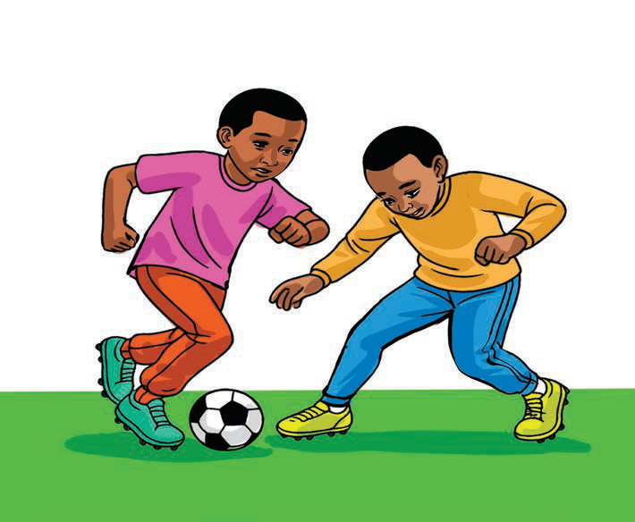

(e) Defending
Refers to the act of preventing the opposing team from possessing the ball and scoring. Players can defend in different ways, such as:
- Man-to-man defending: A player follows an opponent closely to prevent them from receiving the ball or shooting the ball.
- Zonal defending: Players stay in specific areas of the field to ensure that there are no opportunities for the opposing team to penetrate.
- Tackling: A player takes possession of the ball from the opponent by using the feet, legs or body without committing a foul.
